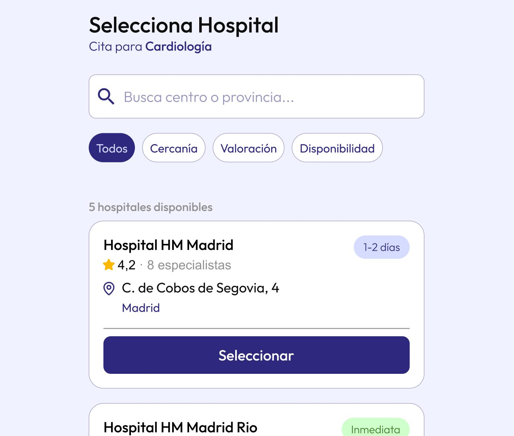

CATEGORÍA
UX/UI
AÑO
2025
ROL
Diseñador UX/UI
CLIENTE
Trabajo de Fin de Master
HERRAMIENTAS
UX Research · Prototyping · UI Design
Rediseño de la aplicación de HM Hospitales - Proyecto realizado como Trabajo de Fin de Master, donde se solucionan los principales problemas encontrados en la actual aplicación.
Como Trabajo de Fin de Master se nos pidió rediseñar una aplicación móvil a nuestra elección personal, en mi caso elegí la aplicación de gestión médica de HM Hospitales.
Para este trabajo se nos pidió unicamente el rediseño de las pantallas de un User Flow, así como el diseño de una pantalla de la versión web. Este proyecto fue desarrollado en un plazo de 1,5 meses.
Tras el proceso de investigación, los principales problemas descubiertos son el proceso de solicitud de cita, la falta de usabilidad para personas poco afines a las tecnologías y un apartado estético de la aplicación poco limpio. Esto causaba que se cancelasen procesos de citación via aplicación y se decidiese concretar las citas de forma presencial.
El problema principal a resolver era limpiar y optimizar el User Flow que se desarrolla a la hora de concretar una cita medica.
Proyecto de fin de master, primer proyecto grande de UX/UX y un plazo de 1,5 meses desde la fecha de inicio hasta la entrega.
Conseguí identificar el problema principalmente a través del research y la realización de encuestas.
Imágenes del proceso
Caso de estudio
Los wireframes del flujo de citas y resultados de HM Hospitales permitieron validar la estructura de navegación antes de definir el aspecto visual. Priorizamos una jerarquía clara y pasos mínimos, pensando en usuarios como Antonio, con poca experiencia digital.
La investigación fue el pilar del proyecto. A través de entrevistas, mapas de empatía y customer journeys de Marta y Antonio, identificamos frustraciones reales, como la falta de citas o la dificultad para leer resultados, que guiaron cada decisión de diseño.
El moodboard de HM Hospitales reúne referencias de color, tipografía y espaciado que transmiten calma y confianza clínica, con alto contraste y tamaños accesibles. Esta base visual asegura coherencia entre pantallas y cercanía con pacientes de cualquier edad.
El flujo de usuario mapea el recorrido real de reserva de citas, como el de Marta: sin hueco disponible y sin poder cambiar de hospital sin reiniciar el formulario, hasta el abandono. Estos diagramas revelan los puntos de fricción que el nuevo diseño resuelve.
Decisiones de diseño
Buscador de citas multicentro: si no hay hueco, mostramos el hospital más cercano.
Accesibilidad por defecto: tipografía grande, alto contraste y semáforo de colores.
Combina rapidez para Marta y confianza y claridad para Antonio en un mismo flujo.
